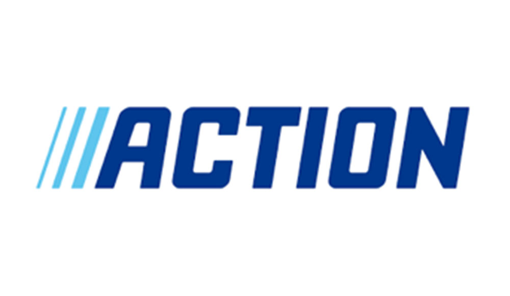
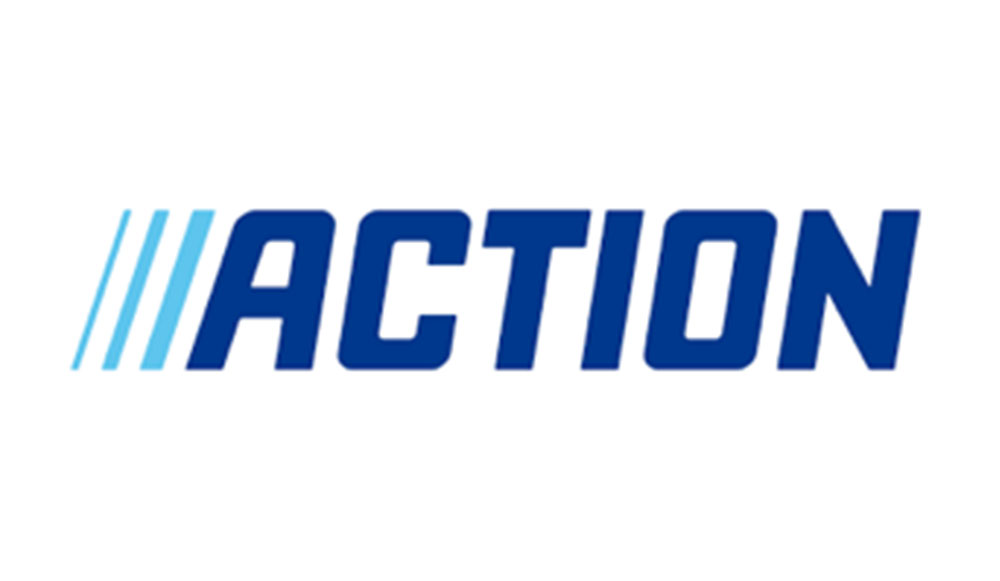

Home
Wie ben ik
Opleidingen
Bijbanen
Hobby's

Home
Wie ben ik
Opleidingen
Bijbanen
Hobby's
Ik heb in totaal 2 bijbanen gehad waarvan ik bij 1 nog steeds werk.
Dat waren en zijn Dirk van den broek in Hardinxveld en de Action zowel in Papendrecht als in Sliedrecht.
Daar heb gewerkt en werk ik als vulploegmedewerker. Waar ik en andere de winkel moesten bijvullen en netjes houden.
Dirk
Ik heb in totaal een half jaar bij Dirk gewerkt omdat mijn contract niet verlengt werdt. Dat was wel jammer omdat veel van mijn vrienden er ook werkten.
Action
Ik werk nu sinds de zomervakantie van 2019 bij de Action, eerst in Papendrecht daarna in Sliedrecht.
Ik werkte eerst in Papendrecht omdat de winkel in Sliedrecht nog gebouwd moest worden en dat was 3 maanden uitgesteld.
Wat heb ik er van geleerd
Ik heb er geleerd hoe ik snel en netjes kan werken en niet te snel afgeleid worden.